Requirements
Employee Roster is entirely self-hosted and stores all data in your own WordPress database with no external API dependencies or SaaS connections. Before installing, verify your environment meets the following minimum versions.
| Component | Minimum Version |
|---|
| WordPress | 5.8 or later |
| PHP | 7.4 or later |
| MySQL / MariaDB | MySQL 5.7+ or MariaDB 10.3+ |
ℹ️
Most modern WordPress hosting satisfies these requirements. If you are unsure, check your hosting control panel under PHP version and database settings before activating the plugin.
Installation
Installation follows the standard WordPress plugin process. On first activation, the plugin automatically creates all database tables, registers the three custom roles, seeds default settings, and creates the five frontend portal pages with no manual setup required.
- Upload the
emp-roster folder to /wp-content/plugins/.
- Activate the plugin via Plugins > Installed Plugins.
- On activation the plugin automatically:
- Creates 7 custom database tables
- Registers the
emr_manager, emr_supervisor, and emr_employee WordPress roles
- Seeds all default settings
- Creates 5 WordPress pages pre-loaded with the frontend portal shortcodes
- Navigate to EmpRoster > Settings to configure departments, locations, and other options.
- Assign the Roster Manager role to your scheduling staff and Roster Employee to your workers.
📋
The five frontend pages created on activation are: Dashboard, My Shifts, Leave, Clock In/Out, and Availability. If you delete any of these pages, you can recreate them by placing the relevant shortcode on any WordPress page. See Shortcode Pages for the full shortcode list.
Quick Start
Follow these five steps to go from a fresh install to a working roster. Each step takes only a few minutes once the plugin is activated.
- Create departments: Go to EmpRoster > Settings > General and enter department names, one per line. The free version supports unlimited departments; Starter supports up to 5; Professional and Business are unlimited.
- Create locations: In the same General settings panel, add location names and pick a colour for each. Limits follow the same per-plan tiers as departments.
- Add staff: Go to EmpRoster > Staff > Add New Staff. Assign each person a role (Manager, Supervisor, or Employee), a job type (Full-time, Part-time, or Casual), and an hourly pay rate. A WordPress user account is created automatically.
- Create a shift: Open EmpRoster > Dashboard and click + Add Shift. Fill in the title, date/time, location, department, and assignment type. Assign employees directly or leave it open for self-assignment.
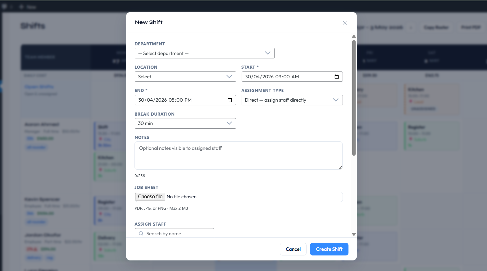
- Employees log in: Staff can use the WordPress admin or the frontend portal pages to view their roster, submit leave requests, clock in/out, and set their weekly availability.
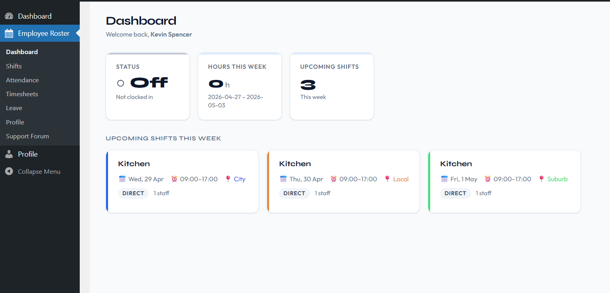
✅
All five steps together typically take under 15 minutes on a fresh install. You can return to Settings at any time to adjust departments, locations, payroll, and notification options.
Updating the Plugin
Plugin updates are delivered through the standard WordPress update mechanism. All data — staff accounts, shifts, attendance records, leave history, settings, and licence information — is fully preserved across updates.
Applying an update
When a new version of Employee Roster is available, a notification appears in WordPress Admin > Dashboard > Updates and on the Plugins screen. Click Update Now to apply it. No manual preparation is needed before updating.
Auto-deactivation during the update process
WordPress briefly deactivates the plugin during the file-replacement step of an update. This is standard WordPress behaviour and is handled transparently — no manual deactivation or reactivation is required before or after the update. The plugin reactivates automatically once the new files are in place.
When the updated plugin loads for the first time after a version change, it runs an internal upgrade routine that applies any required database schema migrations. This routine is safe to run on a live site: it is idempotent, runs only when a version increment is detected, and does not modify or delete existing data.
📋
No manual steps are required before or after applying a plugin update. All settings, staff accounts, shifts, and historical records are preserved automatically. If you run a staging/production workflow, test the update on staging before applying it to the live site.
Seamless plan upgrades
Upgrading your licence plan (for example, from Starter to Professional) does not require a plugin update or any WordPress configuration change. Once the upgraded licence is verified, plan-gated features become available immediately on the next page load with no manual re-enabling needed.
If settings or data that were previously constrained by a lower plan already exist — for example, departments added during a higher-tier trial — they are restored automatically the moment the upgrade is applied. Downgrading to a lower plan does not delete data above the new limits; it only blocks the creation of new entries beyond the cap. See Staff Account Limits by Plan for the full breakdown.
Custom Roles Overview
The paid plans register three custom WordPress roles on activation. These roles determine what each user can see and do within the plugin, and they also control the WordPress admin experience; roster users see only the Employee Roster menu, not the full WordPress dashboard.
📋
Free version: the WordPress.org version registers the Roster Employee role only. The Roster Manager and Roster Supervisor roles are not part of the free version — you manage your team directly through your WordPress Administrator account, which has full access to every roster feature.
| Role | Display Name | Description |
|---|
emr_manager | Roster Manager | Full roster management access: create/edit/delete shifts, manage staff, approve leave, view payroll |
emr_supervisor | Roster Supervisor | Manage shifts and staff within their scope; subset of manager capabilities |
emr_employee | Roster Employee | View own shifts, clock in/out, submit leave, set availability |
WP Administrators retain full access to all Employee Roster features in addition to their normal WordPress capabilities. Administrators are not included as roster staff by default. See Admin Inclusion Settings to change this.
📋
Role assignment happens at the WordPress user level. When you create a staff member through EmpRoster > Staff > Add New Staff, the plugin automatically assigns the correct WordPress role to the newly created user account.
Custom Capabilities
Each role is granted a specific set of WordPress capabilities that gate access to individual plugin features. These capabilities are checked throughout the plugin backend and frontend to determine what each user can see and do.
| Capability | Granted To |
|---|
emr_manage_shifts | Manager, Supervisor, Admin |
emr_view_all_staff | Manager, Supervisor, Admin |
emr_view_all_shifts | Manager, Supervisor, Admin |
emr_approve_leave | Manager, Supervisor, Admin |
emr_edit_attendance | Manager, Supervisor, Admin |
emr_view_own_shifts | All roles |
emr_clock_in_out | Employee, Supervisor, Manager, Admin |
emr_submit_leave | All roles |
emr_manage_availability | All roles |
emr_view_reports | Manager, Admin |
emr_manage_settings | Manager, Admin (Starter+ only for Managers) |
emr_request_swap | All roles |
Capabilities are independent of plan gating. A Starter-plan Manager has emr_manage_settings capability granted, but plan-gated settings within the Settings page (such as Tax or Daily Budget) still display an upgrade prompt on lower plans.
Admin Inclusion Settings
EmpRoster provides two settings that control whether WordPress administrator accounts appear in the staff list: a per-administrator personal toggle and a global override that includes all administrators at once. For full details on how these settings interact and what happens when the global setting is disabled, see Admin Visibility (Per-Administrator Control).
Admin Visibility
Available to WordPress Administrators only. Roster Managers do not see this setting.
The Admin Visibility settings control whether WordPress administrator accounts appear in the EmpRoster staff list as Managers. Because administrators are not roster staff by default, these two settings let each administrator independently decide their own participation, with an optional global override to include all administrators at once.
Navigate to EmpRoster > Settings > Roles & Permissions to find the Admin Visibility section. These settings are visible only to WordPress Administrators — Roster Managers do not see this section.
Screenshot placeholder — Admin Visibility section in Roles & Permissions settings
The Two Settings
| Setting | Scope | Description |
|---|
| Include Current Administrator in the staff list |
Per-administrator |
When enabled, only the currently logged-in administrator account is added to the EmpRoster staff list as a Manager. Each administrator controls this independently — enabling it for one admin has no effect on any other admin account. |
| Include All Administrators in the roster |
Global override |
When enabled by any administrator, all WordPress administrator accounts are automatically added to the EmpRoster staff list as Managers. Acts as a global switch that overrides individual settings. |
How Per-Administrator Inclusion Works
Each WordPress administrator controls their own roster participation independently via the Include Current Administrator in the staff list toggle.
When an administrator enables this setting and saves:
- Only that specific administrator account is added to the staff list
- They appear throughout EmpRoster with the Manager role — in the roster view, staff list, analytics, timesheets, dashboards, and all manager-based queries
- A confirmation message appears on the Settings page confirming the current administrator is now included as a Manager
- The setting state is stored per administrator account — it persists across sessions and is not affected by other administrators changing their own setting
When an administrator disables this setting and saves:
- Only that administrator is removed from the staff list
- All other administrators' inclusion settings remain unchanged
- Historical records (attendance, leave, shifts) for that administrator are preserved
Because this setting is per-account, two administrators on the same site can have different states — one included in the roster, one not — without any conflict.
How Global Inclusion Works
The Include All Administrators in the roster setting acts as a global override that affects every WordPress administrator account on the site simultaneously.
When the global setting is enabled:
- All WordPress administrator accounts are immediately added to the EmpRoster staff list as Managers
- In the background, each administrator's personal Include Current Administrator in the staff list setting is permanently synced to enabled — so every admin now has their individual setting turned on
- On the Settings page, both toggles appear checked for every administrator who views the page, because all admins are globally included
When the global setting is later disabled:
Disabling the global setting does not remove administrators from the roster. Because each administrator's personal inclusion setting was already enabled during the global inclusion process, all administrators remain individually included as Managers.
After the global setting is turned off:
- Each administrator retains their personal Include Current Administrator in the staff list setting in the enabled state
- Administrators continue to appear in the roster as Managers
- Each administrator may independently disable their own personal setting if they wish to be removed from the roster
- No administrator is removed automatically — removal requires each admin to manually disable their own personal toggle
📋
This design ensures that turning off the global setting is non-destructive — it does not silently remove managers from active rosters or break existing shift assignments.
Screenshot placeholder — Both toggles shown in enabled state after global inclusion
State Combinations Reference
| Include Current Admin | Include All Admins | Result |
|---|
| Off | Off | This administrator does not appear in the roster. Other admins unaffected. |
| On | Off | Only this administrator appears in the roster as a Manager. |
| On (synced) | On | All administrators appear in the roster as Managers. Both toggles show as checked for every admin. |
| On (retained) | Off (disabled after global was on) | This administrator remains in the roster because their personal setting was synced on during global inclusion. They can disable their personal toggle to opt out. |
Where Admin Inclusion Takes Effect
When an administrator is included in the roster, they appear as a Manager throughout EmpRoster:
- Staff list — shown in EmpRoster > Staff with the Manager role badge
- Roster views — appear as a staff row in weekly, day, and monthly views when shifts are assigned
- Shift assignment — available for selection when assigning shifts
- Analytics — included in timesheet summaries, payroll calculations, and labour cost totals
- Dashboard — counted in KPI cards and manager-scope queries
- Permissions — treated as a Roster Manager for all in-plugin permission checks
Important Considerations
- These settings only affect WordPress administrator accounts. Regular Roster Manager accounts (
emr_manager role) are always included in the staff list and are unaffected by these settings.
- Enabling Admin Visibility does not change the administrator's WordPress role — they remain a WordPress Administrator. EmpRoster simply includes them in roster queries and treats them as a Manager within the plugin.
- If a WordPress administrator account is deleted, their EmpRoster records (shifts, leave, attendance) follow standard WordPress user deletion behaviour.
- The Admin Visibility section is not visible to Roster Managers — only WordPress Administrators can see and change these settings.
Hidden WordPress UI
When a Roster Manager, Supervisor, or Employee logs into the WordPress admin, the plugin hides all standard WordPress UI elements that are irrelevant to rostering. The user sees only the Employee Roster menu in the left admin sidebar.
What is hidden
- All WordPress admin menu items except Employee Roster
- The WordPress dashboard home page and all its widgets
- Plugin-originating admin notices (notices from other installed plugins)
Why this matters
Showing the full WordPress admin to roster users would expose information about other installed plugins, site settings, and WordPress internals that roster staff have no reason to see. Hiding this UI reduces confusion and prevents accidental disclosure of your site configuration.
📋
WP Administrators always see the full WordPress admin interface regardless of this behaviour. This setting applies only to the three custom roster roles: Manager, Supervisor, and Employee.
Creating Shifts
Navigate to EmpRoster > Dashboard and click + Add Shift, or use the Shifts view. A shift modal opens where you fill in the details and assign employees before saving.
| Field | Description |
|---|
| Title | Short label for the shift (e.g. "Morning Shift") |
| Start date/time | Shift start timestamp |
| End date/time | Shift end timestamp |
| Location | Dropdown populated from configured locations |
| Department | Dropdown populated from configured departments |
| Assignment type | Direct: assign specific employees; or Open: slot-based, employees self-assign (Starter+) |
| Break minutes | Unpaid break duration deducted from hours worked in payroll and timesheets |
| Colour | Visual colour shown on shift blocks in the weekly and monthly views |
| Slot limit | (Open shifts only) Maximum number of employees who can claim this shift |
| Notes | Optional internal notes visible to all assignees |
| Search by name | Search by employee name to find the correct person to assign to the shift when using the direct assignment type. |
📋
No shift limit: every version, including the free version on WordPress.org, supports an unlimited number of active shifts.
Assignment Types (Direct vs Open)
Each shift uses one of two assignment modes. The mode is selected in the shift modal at creation time and can be changed when editing a shift.
Direct Assignment
The manager selects specific employees from the staff list when creating or editing the shift. Assigned employees receive a shift assignment email immediately (if notifications are enabled). When multiple employees are assigned to a direct shift, each employee gets their own independent shift record; editing or deleting one employee's shift does not affect any other employee's record.
Open Shifts
The shift is published with a configurable slot limit. Eligible employees see it in their roster and can claim a slot themselves. Once claimed, managers can review and adjust the assignment from the shift modal. Open shifts require the Starter plan or above. In the free version, the Open Shifts row is always shown to managers so that unassigned direct shifts are never hidden, but self-assignment is not available to employees.
Admin/Manager: Creating an open shift with approval:
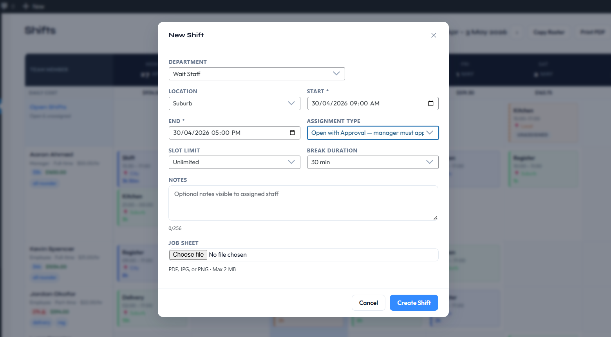
Employee: Claiming an open shift:
Employee: Requests for open shift:
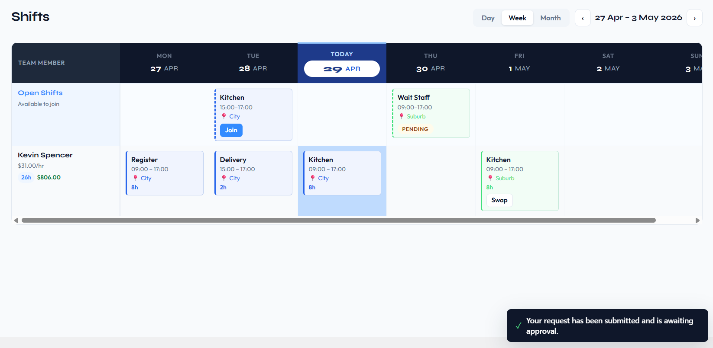
Admin/Manager: Accepting a request for an open shift:
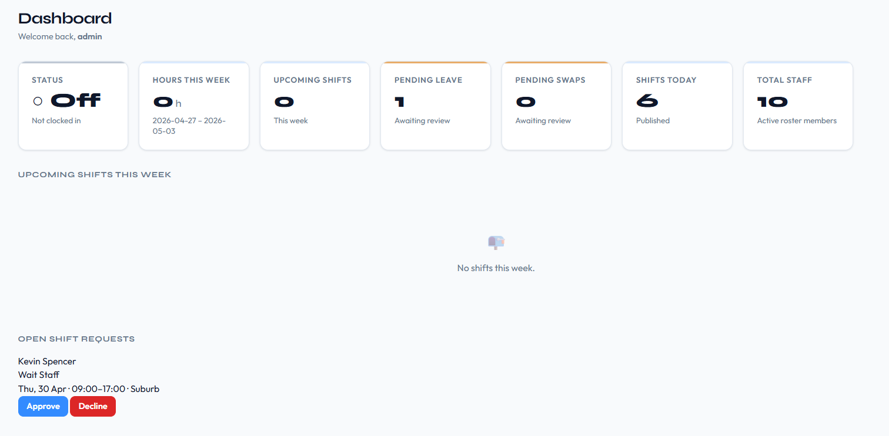
📋
Use Direct when you know exactly who is working a shift. Use Open when you need to fill a slot and want employees to self-select, for example for casual or on-call positions.
Roster Views (Weekly, Monthly, List)
Employee Roster provides three views for browsing and managing shifts, selectable from the roster toolbar at the top of the screen.
Weekly Roster View
Displays a grid of staff rows versus day columns for the selected week. Each cell shows the shift blocks assigned to that employee on that day, including the shift time, location, and colour. Available on all plans.
Staff visibility: Only staff members who have at least one shift assigned in the selected week are displayed; employees with no shifts in that window are automatically hidden to keep the view focused. Employees always see their own row regardless of this rule.
Unassigned shifts: Direct shifts with no assigned employees appear in the Open Shifts row for managers with an "Unassigned" badge. The Open Shifts row is always shown to managers so that no shift is ever silently hidden.
Monthly Calendar View
Monthly calendar view is available on all plans including Free. Each day cell shows shift summaries with colour-coded badges. Today's cell is highlighted.
List View
A tabular list of all upcoming shifts with their title, date/time, location, department, and assignment count. Useful for a quick overview without the visual calendar layout. Available on all plans.
Today Indicator
In both the weekly roster and monthly calendar views, the current day receives a distinct highlighted background. The day column header displays "Today" instead of the date string, and individual shift rows for today also display "Today" in their date column.
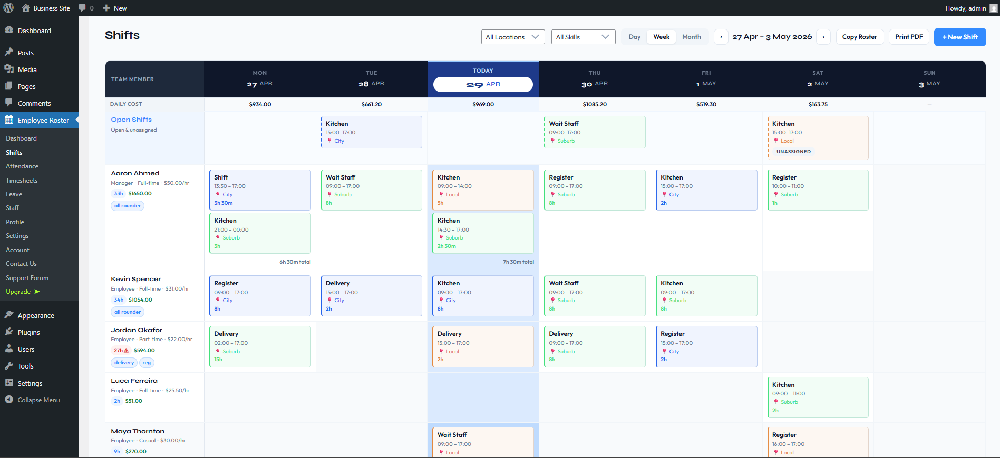
Editing & Deleting Shifts
Click any shift block in the weekly or monthly view, or any row in the list view, to open the shift modal. Managers can edit all shift fields, reassign employees, or delete the shift from within the same modal.
Editing a Shift
All fields set at creation (title, date/time, location, department, assignment type, break minutes, colour, slot limit, and notes) are fully editable after saving. Reassigning employees (adding or removing assignees) can also be done from the edit modal at any time.
✉️
Timing change notification: If you change a shift's start or end time, all currently assigned employees automatically receive a Shift Timing Change email (if email notifications are enabled). This fires on save, so employees are notified immediately.
Deleting a Shift
The delete button is available inside the shift modal. Deleting a shift permanently removes the shift record and all its assignment records. This action cannot be undone.
⚠️
Deleting a shift removes all employee assignments for that shift. If you only need to remove one employee from a shift, use the reassignment controls in the edit modal rather than deleting the whole shift.
Active Shifts
An active shift is any shift whose date is today or in the future. Past shifts (start date before today) are not counted as active. The active-shift count determines how close you are to your plan's shift limit.
Why active shifts are counted
EmpRoster counts active shifts rather than total shifts so that historical records are never deleted just to make room. Once a shift's date passes it no longer occupies a slot in the limit, meaning the roster can grow indefinitely into the past without affecting how many upcoming shifts you can schedule.
Plan limits
| Plan | Active shift limit |
|---|
| Free | Unlimited |
| Starter | Unlimited |
| Professional | Unlimited |
| Business | Unlimited |
Checking your active shift count
Navigate to EmpRoster > Dashboard. The summary bar at the top of the page shows the current active shift count.
Clocking In and Out
Starter+
Clocking in and out requires the Starter plan or above. In the free version, the Attendance submenu and the frontend clock page (/emp-roster-attendance) are hidden entirely — no upgrade prompt is shown to employees. On Starter and above, employees navigate to EmpRoster > Attendance in the WP admin, or visit the frontend clock page, to start and end a clock session. Only one active clock-in session is permitted per user at a time; starting a new session while one is already open is blocked.
What the system records
Each attendance entry stores the following fields:
- Clock-in timestamp: recorded when the employee clicks Clock In
- Clock-out timestamp: recorded when the employee clicks Clock Out; null while the session is still open
- Break minutes: entered at clock-out; deducted from total hours worked in timesheets
- Optional notes: free-text field the employee can fill in at clock-out
- Associated shift: linked to a shift if the employee selects one at clock-in (optional)
📋
Managers can always view, edit, and delete attendance records through EmpRoster > Timesheets regardless of whether self clock-in/out is enabled. The Self-Clock Setting only controls employee-facing access.
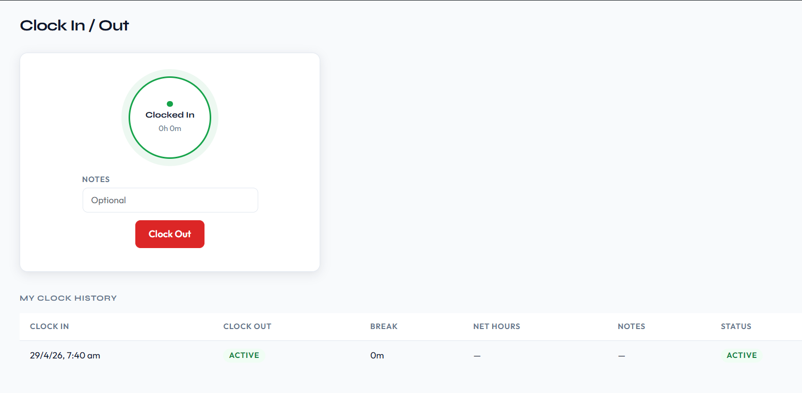
Self-Clock Setting
Starter+
The Allow self clock-in/out setting in EmpRoster > Settings > Roster & Attendance controls whether employees can record their own attendance. It is enabled by default.
📋
This setting only applies on the Starter plan and above. In the free version, the Attendance feature is unavailable entirely and this setting has no effect.
When enabled
- The Attendance submenu is visible to employees and supervisors in the WP admin.
- The frontend clock widget on
/emp-roster-attendance is active.
- Employees can clock in and out independently, entering break minutes and optional notes themselves.
When disabled
- The Attendance submenu is hidden from employee and supervisor accounts.
- The frontend clock widget is inactive for non-managers.
- Managers must manually create attendance records through Timesheets on behalf of employees.
📋
Disabling self clock-in/out does not affect existing attendance records. Managers always retain full access to view and edit all attendance entries regardless of this setting.
Attendance Management (Managers)
Starter+
Attendance management requires the Starter plan or above. In the free version, the Attendance feature is unavailable entirely. Managers access all attendance records from EmpRoster > Timesheets. This view covers every staff member's clock history with filter and inline-edit capabilities.
What managers can do
- View the full clock-in/out history for any employee
- Manually edit a clock-in time, clock-out time, or break minutes on any record
- Delete incorrect or duplicate records
- Filter the view by date range and by individual employee
Requests
Starter+
The Requests page consolidates all staff request types into a single location. Access it from EmpRoster > Requests in the WordPress admin sidebar, or from the Requests link in the in-plugin navigation.
The page contains three independently paginated sections:
| Section | Who submits | Who approves |
|---|
| Leave Requests | Employees, Supervisors | Managers, Admins |
| Open Shift Requests | Employees, Supervisors | Managers, Admins |
| Shift Swap Requests | Employees, Supervisors | Managers, Admins |
Each section shows 10 entries per page with its own Prev/Next pagination controls — navigating one section does not affect the others.
Pending count badge
The Requests nav item displays a live badge showing the total number of pending items across all three sections relevant to the current user's role. The badge updates whenever the dashboard or Requests page is loaded.
Plan availability
The Requests page requires the Starter plan or above. In the free version, the Requests menu item is hidden entirely for all roles including managers. Leave submission, open shift claiming, and shift swaps all require Starter plan or above.
Screenshot placeholder — Requests page showing all three sections
Frontend access
Employees on Starter+ can submit leave requests from the frontend portal at /emp-roster-leave. The shortcode [emp_roster_leave] renders the leave submission form for authenticated employees.
Leave Requests
Starter+
Submitting a Leave Request
Employees and supervisors navigate to EmpRoster > Requests and use the Leave Requests section, or use the frontend portal at /emp-roster-leave. Fields:
| Field | Options |
|---|
| Leave type | Annual Leave, Sick Leave |
| Start date | Date picker |
| End date | Date picker |
| Reason | Optional text |
On submission:
- The request appears in the Leave Requests section of the Requests page with a Pending status
- An automatic email notification is sent to all active Roster Managers (and WP Administrators when Admin Include Self is enabled)
- The submitting employee receives a confirmation
Approval Workflow
Managers see all pending leave requests in the Leave Requests section of EmpRoster > Requests. Each request shows the employee name, leave type, dates, reason, and current status.
Managers can:
- Approve — request status changes to Approved; employee receives an email notification with the decision
- Decline — request status changes to Declined; employee receives an email notification with the decision
Screenshot placeholder — Leave Requests section on the Requests page
Leave Request Statuses
| Status | Meaning |
|---|
| Pending | Submitted, awaiting manager review |
| Approved | Approved by a manager |
| Declined | Declined by a manager |
Open Shift Requests
Starter+
Open Shift Requests appear when an employee or supervisor claims a slot on an open shift. Managers review these claims from the Open Shift Requests section of EmpRoster > Requests.
How Employees Claim Open Shifts
Eligible employees and supervisors see open shifts in the Open Shifts row of the roster view. Clicking a shift shows the available slots and a Claim button. On claiming:
- A pending open shift request is created
- An email notification is sent to all active Roster Managers
- The shift shows as Pending for the claiming employee until a manager reviews it
Manager Review
Managers see all pending open shift claims in the Open Shift Requests section. Each entry shows the shift title, date, time, and the claiming employee's name.
Managers can:
- Confirm — the employee is assigned to the shift; all remaining pending claims for the last available slot are automatically declined
- Decline — the employee's claim is rejected; the slot remains available for others to claim
📋
Fully-filled shifts (all slots confirmed) are automatically hidden from the Open Shifts row so employees cannot claim additional slots beyond the limit.
Screenshot placeholder — Open Shift Requests section on the Requests page
Past Shifts
Past shifts are not shown to employees in the Open Shifts row or month calendar. Attempting to join a shift that has already started returns a clear error message.
Shift Swap Requests
Professional+
Shift swap requests require the Professional plan or above. The feature lets employees formally request that a shift be reassigned to another employee, subject to manager approval. Employees cannot swap shifts directly without a manager approving the request.
Shift Swap Requests appear as the third section on the EmpRoster > Requests page, below Leave Requests and Open Shift Requests. Each section is independently paginated.
How to Submit a Swap Request
An employee navigates to the shift they want to give up and clicks Request Swap. In the request form they can:
- Optionally specify a target employee they have arranged to swap with
- Add an optional reason for the swap (visible to the reviewing manager)
If no target employee is specified, the request is open, meaning any eligible employee could potentially take the shift. The submitted request immediately appears in the Shift Swap Requests section with a Pending status.
📋
In the free version and on the Starter plan, the Request Swap button is hidden from shift detail views. No upgrade prompt is shown to employees; the feature is silently omitted for plans that do not support it.
Manager Review
Managers see all pending swap requests in the Shift Swap Requests section of the Requests page. Each entry shows the requesting employee, the shift they want to give up, and the target employee (if one was specified in the request).
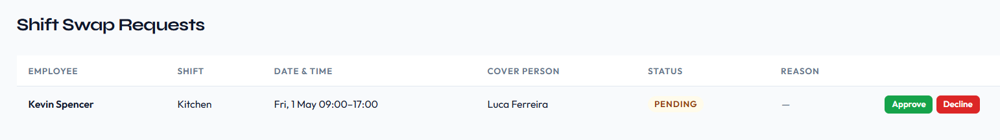
Approving a swap
When a manager approves a swap, the plugin automatically reassigns the two shifts between the employees involved. No manual editing of shift assignments is needed; the handover is applied atomically on approval.
Declining a swap
When a manager declines a swap, the original assignments remain exactly as they were. The requesting employee's shift is unchanged.
Manager Actions on the Requests Page
Managers can also Edit or Delete swap requests directly from the Requests page:
- Edit — opens a modal to update the request status and reason
- Delete — removes the request after a confirmation prompt
📋
The Shift Swap Requests section is only visible to Managers and WP Administrators. Supervisors with emr_approve_leave capability can see leave requests but swap requests require manager-level access.
Screenshot placeholder — Shift Swap Requests section on the Requests page
Leave Balances
Starter+
Leave balance tracking requires the Starter plan or above. When the Enable Leave Balance Tracking setting is turned on, each employee has annual and sick leave balances tracked per calendar year. Balances accrue based on configured hourly entitlements and are automatically reduced when leave is approved.
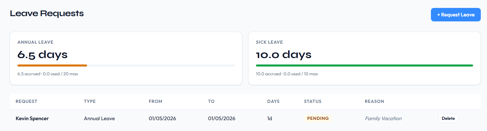
Default entitlements (hours per year)
| Job Type | Annual Leave | Sick Leave |
|---|
| Full-time | Configurable (default 20 hrs) | Configurable (default 10 hrs) |
| Part-time | Configurable (default 10 hrs) | Configurable (default 5 hrs) |
| Casual | N/A | N/A |
Annual leave pro-rating for new accounts
Annual leave accrual starts from the employee's WordPress account creation date when the account was created during the current calendar year, rather than always accruing from January 1st. This pro-rates the entitlement so a new employee hired in July does not immediately receive a full year's allocation. Sick leave allocation is not pro-rated; casual employees receive no balance on either leave type.
Manager controls
Managers can manually trigger an accrual run, view the current balance for any employee, and apply manual adjustments (positive or negative) to correct discrepancies.
Setting Availability
Employees set their working availability via EmpRoster > Shifts > Availability in the WP admin, or through the frontend /emp-roster-availability page. Availability is weekly and recurring; it represents which days and times the employee is generally available each week, not availability for a specific date.
How the availability grid works
The grid shows all 7 days of the week. For each day the employee is available, they set a time range using start-time and end-time pickers. Days left empty or toggled off are treated as unavailable.
- An employee available Monday through Friday from 8 am to 5 pm sets those ranges on each weekday row.
- A day with no time range set is recorded as "unavailable" for that day of the week.
- Availability data is re-used every week; there is no need to re-enter it each week unless the employee's availability changes.
When no availability is set
If an employee has not set any availability at all, the shift assignment modal shows their status as Not set. This is distinct from Unavailable, which means the employee has recorded availability but it does not cover the shift's day and time. See Availability Hints in Shift Modal for how this information is surfaced to managers.
📋
Availability data is advisory only; it does not block a manager from assigning an employee to a shift outside their stated availability. It is surfaced as a hint inside the shift modal to help managers make informed scheduling decisions.
Availability Hints in Shift Modal
Starter+
When a manager opens the shift assignment modal to add or review employees, each employee row shows an availability indicator based on that employee's recurring weekly availability. This allows managers to spot scheduling conflicts at a glance without leaving the modal. Requires the Starter plan or above; hints are not shown in the free version.
| Indicator | Meaning |
|---|
| Available | The employee has recorded availability that covers both the day of the week and the time range of this shift. |
| Unavailable | The employee has recorded availability but it does not cover this shift's day or time. |
| Not set | The employee has not entered any availability for this day of the week. |
📋
Availability indicators are hints only and do not prevent assignment. A manager can assign any employee to any shift regardless of their availability status.
Adding Staff
Managers navigate to EmpRoster > Staff > Add New Staff to create a new team member. The plugin creates a WordPress user account automatically and assigns the selected role. The new staff member is immediately available for shift assignments.
| Field | Description |
|---|
| First name / Last name | Required. Used in shift views, emails, and reports. |
| Email | Used as the WordPress login email address and as the destination for all notification emails. |
| Role | Roster Manager, Roster Supervisor, or Roster Employee |
| Job type | Full-time, Part-time, or Casual; determines leave entitlements and weekly hour limit thresholds |
| Pay rate | Hourly rate used for payroll earnings calculations (Starter+) |
✉️
Welcome email: If email notifications are enabled, a welcome email is sent to the new employee automatically. In the free version, this is a simplified notification (name and notification of roster addition; no credentials). On Starter and above, the full onboarding email is sent containing the employee's login email, a one-time password setup link, and a direct link to the EmpRoster dashboard.
⚠️
Supervisor account limits apply on the Starter plan. Employee accounts are unlimited on every version. In the free version, the Roster Supervisor and Roster Manager roles are not part of the product — manage your team directly through your WordPress Administrator account. Starter supports up to 2 supervisors and unlimited managers; Professional and Business are unlimited. Attempting to create a supervisor beyond the Starter limit returns an error. See Staff Account Limits by Plan for the full breakdown.
Editing Staff
Click any staff row in EmpRoster > Staff to open the staff edit modal. All fields set at creation (first name, last name, email, role, job type, and pay rate) are editable after the account has been created.
Role changes
Changing a staff member's role (for example, from Employee to Supervisor) immediately updates their WordPress capabilities. The change takes effect on their next page load with no re-login required.
Pay rate visibility for supervisors
Supervisors do not see pay rate fields in the staff list or shift modal by default. The Supervisors can see pay rates setting in Roles & Permissions (Professional+) enables this visibility when your organisational structure requires it.
Job type changes
Changing an employee's job type affects future leave accrual calculations and the weekly hour threshold used for overtime flagging. It does not retroactively alter existing leave balances or timesheet records.
Skill Tags
Professional+
Skill Tags let managers label employees with relevant competencies — for example Barista, First Aid, Forklift Licence, or Opening Shift Lead. Tags appear on each employee's profile and in the shift assignment panel so managers can immediately identify the right person for a shift. Skill Tags require the Professional plan or above.
Plan availability
| Plan | Skill Tags |
|---|
| Free | ✗ No skill tag UI shown |
| Starter | ✗ Upgrade prompt in staff modal |
| Professional | ✓ |
| Business | ✓ |
Adding skill tags to an employee
Open the Add Staff or Edit Staff modal in EmpRoster > Staff. A Skill Tags field is available on Professional and Business plans. Type to enter one or more tags for the employee and save. Tags are stored per employee and can be added, edited, or removed at any time.
Screenshot placeholder — Skill Tags field in Edit Staff modal
Using skill tags when assigning shifts
When a manager opens the shift assignment modal to add employees to a shift, each eligible employee's skill tags are displayed as small chips alongside their name and availability indicator. This allows managers to identify qualified staff at a glance without leaving the modal.
Screenshot placeholder — Skill tags visible in shift assignment modal
📋
Skill tags are display-only in the assignment modal — they do not restrict which employees can be assigned to a shift. A manager can assign any employee regardless of their tags.
Deactivating & Deleting Staff
Employee Roster provides a deactivation action that suspends a staff member's access and hides them from the roster while preserving all their historical data. If you need to permanently remove the WordPress user account itself, that is done separately by a WordPress Administrator through WordPress Admin > Users.
Deactivating a Staff Member
Open a staff record in EmpRoster > Staff and click Deactivate from the Edit modal. A confirmation prompt is shown before the change is applied. The action takes effect immediately.
Screenshot placeholder — Deactivate button in Edit Staff modal
Visibility after deactivation
- The employee is hidden from the active staff list. A collapsed Deactivated Employees section on the Staff page lists all inactive accounts.
- They are removed from shift assignment dropdowns — managers cannot assign new shifts to a deactivated employee.
- In the weekly and monthly roster views, the deactivated employee's row no longer appears.
- Pending leave requests and shift swap requests for the deactivated employee are cancelled automatically.
- All historical data is preserved and fully accessible to managers: past shift assignments, attendance records, leave requests, and timesheet totals continue to appear in the Timesheets view under the employee's name.
Access revocation
- The employee's active WordPress sessions are terminated immediately — they are logged out even if they were actively browsing at the time of deactivation.
- Subsequent login attempts are rejected with the message: "Your account has been deactivated. Please contact your manager."
- All frontend portal pages (shifts, leave, clock in/out, availability) become inaccessible to the deactivated user.
Email flow
No automated email is sent to the employee upon deactivation. Deactivation is an administrative action; whether to communicate it to the affected employee is left to the manager's discretion.
📋
Deactivation is the recommended action for employees who have left the organisation but whose historical records — timesheets, payroll, attendance — must be retained for compliance or reporting purposes.
Reactivating a Staff Member
To reactivate a deactivated employee, open the Staff screen, expand the Deactivated Employees section to reveal their record, then click Reactivate.
- The employee reappears in the active staff list and shift assignment dropdowns immediately.
- All historical data is restored in full — nothing is removed during the deactivation period.
- The employee can log in again immediately after reactivation.
- A fresh password is generated, the deactivation flag is cleared, and a welcome email is sent to the employee.
Screenshot placeholder — Deactivated Employees section with Reactivate button
Deleting a Staff Member
Permanent deletion of a WordPress user account must be done by a WordPress Administrator through WordPress Admin > Users, not through the Employee Roster interface. Deleting a user from the WordPress Users list removes their account entirely and also purges all associated plugin records.
What is deleted
- The WordPress user account
- All shift assignments for that employee
- All leave requests submitted by that employee
- All attendance (clock-in/out) records for that employee
- All availability records for that employee
⚠️
This action cannot be undone. Deleting a user from WordPress permanently removes all their historical timesheet, attendance, leave, and shift data from Employee Roster. If you need to retain any of this for payroll or compliance, deactivate the account instead.
Timesheet Views
Navigate to EmpRoster > Timesheets to access timesheet data. This screen is the central location for reviewing hours worked and payroll calculations across all staff, and is the starting point for payroll exports.
What the view shows
- Weekly summary per employee: total hours worked for the selected period
- Per-shift breakdown: individual clock-in/out times, break deductions, and net hours for each session
- Earnings: gross pay calculated from hours worked × pay rate (when payroll is enabled)
- Date range filter: narrow the view to any date range
📋
CSV export (Starter+): Managers can export the timesheet data in the current date range to a CSV file for external payroll processing. The export button is visible in the Timesheets toolbar on Starter plans and above.
📋
Reveal Pay Rate toggle: By default, pay rate and earnings columns are collapsed in the Timesheets view to keep the table compact. Use the Show Pay toggle in the toolbar to reveal individual pay rate and gross earnings columns for each session row.
Payroll Calculations
Starter+
Payroll calculations require the Starter plan or above. When Enable payroll is turned on in EmpRoster > Settings > Payroll, the plugin computes gross earnings from hours worked and each employee's configured hourly pay rate. In the free version, all payroll fields are hidden with no upgrade prompt displayed.
Enabling payroll
Go to EmpRoster > Settings > Payroll and toggle Enable payroll on. Once enabled:
- Pay rate fields become visible in the Staff screen for each employee
- Earnings columns appear in the Timesheets view
- Daily labour costs appear in the roster week and month view column headers
- Saturday and Sunday penalty rate multipliers are applied automatically to shifts on those days
How earnings are calculated
The base formula for each shift session is:
- Net hours worked = (clock-out − clock-in) − break minutes
- Effective rate = pay rate × penalty multiplier (1.0× on weekdays; configurable on Saturday and Sunday)
- Gross earnings = net hours worked × effective rate
- Totals are shown per employee per date range in the Timesheets view
Weekend Penalty Rates (Starter+)
Starter+
Configure Saturday and Sunday pay multipliers in EmpRoster > Settings > Payroll > Earnings & Rates. When a multiplier greater than 1.0 is set for a day, it is applied to all shift earnings that fall on that day — affecting timesheet session rows, grouped totals, daily labour cost chips, and CSV exports. Set either multiplier to 1.0 to effectively disable the penalty for that day. See Penalty Rates for full configuration details.
📋
Pay rates are set per employee in the Staff screen. In the free version, pay rate fields are hidden entirely with no upgrade prompt displayed.
Penalty Rates
Starter+
Penalty rates allow a multiplier to be applied to an employee's base pay rate for shifts that fall on Saturday or Sunday. This requires the Starter plan or above. Penalty rate multipliers are configured in EmpRoster > Settings > Payroll.
How penalty rates work
When a shift falls on Saturday or Sunday, the plugin multiplies the employee's base hourly pay rate by the configured day multiplier before computing earnings for that shift:
- Effective rate = base pay rate × day multiplier
- Gross earnings = net hours worked × effective rate
Shifts on weekdays (Monday–Friday) always use a multiplier of 1.0 with no penalty applied. Saturday and Sunday multipliers are configured independently of each other.
Default multipliers
| Day | Default multiplier | Effective rate (e.g. $25.00/hr base) |
|---|
| Monday–Friday | 1.0× | $25.00/hr |
| Saturday | 1.5× | $37.50/hr |
| Sunday | 2.0× | $50.00/hr |
Set either multiplier to 1.0 to disable the penalty for that day without needing to turn off payroll entirely.
📋
Penalty multipliers apply site-wide to all employees regardless of job type. Per-employee override rates are not supported; adjust the site-wide multiplier if a different rate is needed for a pay period.
Tax
Professional+
Tax calculations require the Professional plan or above. Starter users see a locked upgrade prompt in the Taxation row of the Payroll settings card. The free version does not include payroll settings at all.
How tax is applied
When Enable tax is turned on in EmpRoster > Settings > Payroll and a tax rate percentage is configured:
- The configured tax rate (%) is applied to each employee's gross earnings to produce a tax amount
- Net pay (gross earnings minus tax) is displayed alongside gross in the Timesheets payroll view
- The tax rate applies uniformly to all employees regardless of job type or hours worked
The tax rate is configured in EmpRoster > Settings > Payroll > Tax rate (%). Setting the rate to 0 effectively disables the tax deduction without needing to toggle the setting off.
Daily Budget
Professional+
Daily budget tracking requires the Professional plan or above. Starter users see a locked upgrade prompt in the Budgeting row of the Payroll settings card instead of the configuration fields. The free version does not include payroll settings at all.
How it works
When Enable daily budget is turned on and a daily budget target amount is configured:
- A compact Daily Cost row appears at the top of the roster table body in week and month views, showing the actual labour cost for each day column
- Days where actual cost exceeds the target are highlighted in red
- Days where actual cost is within the target are highlighted in green
The daily cost is calculated from all employees' shift earnings for that specific day. The target is a single site-wide value configured in EmpRoster > Settings > Payroll > Daily budget target ($).
Job Type Hour Limits
Starter+
Weekly hour thresholds can be configured per job type to flag employees who are approaching or have exceeded their scheduled hours. This feature requires the Starter plan or above; flags are hidden in the free version.
| Job Type | Default Weekly Hours |
|---|
| Full-time | 38 |
| Part-time | 24 |
| Casual | No limit |
Flags appear in the roster view against individual employee rows when their total scheduled hours for the displayed week approach or exceed the threshold for their job type. The thresholds are configurable in EmpRoster > Settings.
Print PDF
Professional+
PDF roster export requires the Professional plan or above. Starter users see an inline upgrade prompt in the roster toolbar instead of the Print PDF button. The free version does not show the button.
How to export
Managers in the week or month view click Print PDF in the roster toolbar. A popup window opens with a self-contained, print-ready HTML layout containing:
- Company name and the selected period in the page header
- Colour-coded shift cards matching the roster colour scheme
- Inter font for clean print output
The browser's print dialog launches automatically. Choose Save as PDF in the print destination to generate a PDF file using the browser's built-in PDF printer. No additional software is needed.
📋
Pay rates and earnings figures are not included in the Print PDF output. The exported roster is a shift schedule only, suitable for sharing with employees.
Enabling Notifications
Email notifications are available on all plans including Free. Go to EmpRoster > Settings > Email Notifications and toggle Enable email notifications on to activate all automated emails. The emails sent depend on your plan:
- Free version: Sends a simplified welcome email when a new staff account is created (employee name and notification of roster addition; no login credentials or dashboard link).
- Starter and above: Sends the full onboarding welcome email (login email, one-time password setup link, direct EmpRoster dashboard link) plus shift assignment emails, shift timing change emails, and leave decision emails.
Manager notification emails
In addition to employee-facing notifications, managers receive email alerts for key events:
- New leave request: When an employee submits a leave request, all Roster Managers receive an email notification so no request goes unnoticed.
- New shift swap request: When an employee submits a shift swap request (Professional+), Roster Managers are notified by email.
Manager notification emails use the same Enable email notifications toggle. They cannot be enabled or disabled independently of the employee notifications.
Technical details
- All emails are sent as plain text using WordPress's
wp_mail() function
- The From name and From address follow the WordPress site settings with no plugin-specific From address
- Notifications are triggered server-side by manager actions and do not require the employee to be logged in when the event occurs
📋
If emails are not being delivered, check that your WordPress site has a working mail sending configuration. Many hosts require an SMTP plugin (such as WP Mail SMTP or Gravity SMTP) to route outgoing mail reliably.
Welcome Email
The welcome email is sent automatically when a manager creates a new staff account through EmpRoster > Staff > Add New Staff, provided email notifications are enabled. The content of the email depends on your plan.
Free version — Simplified welcome
Free
In the free version, a simplified welcome notification is sent to the new employee containing:
- Employee's name
- Notification that they have been added to the roster
No login credentials or password setup link are included in the free version welcome email.
Starter and above — Full onboarding email
Starter+
On Starter and above, the full onboarding welcome email is sent containing:
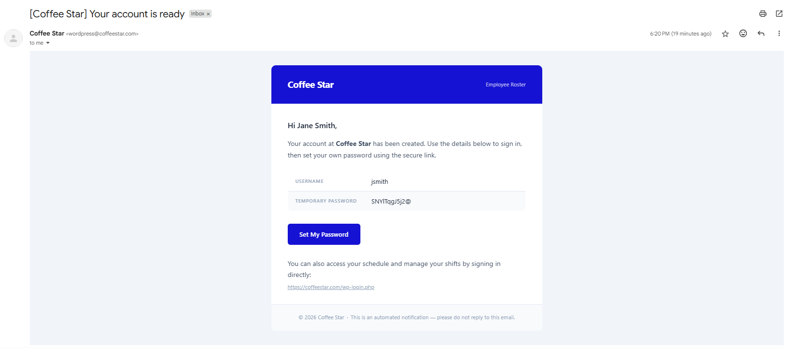
- Employee's name and login email address
- A one-time password setup link (the link expiry follows WordPress default settings)
- A direct link to the EmpRoster dashboard
Shift Assignment Email
Starter+
A shift assignment email is sent to each employee the moment they are assigned to a shift by a manager. The email fires on save; employees are notified immediately when a direct assignment is created or when an open-shift claim is confirmed.
Email contents
- Shift title
- Date and time (formatted according to the WordPress site's date/time settings)
- Location and department
- Shift notes (if any notes were added to the shift)
Shift Timing Change Email
Starter+
A timing change email is sent to all currently assigned employees whenever a manager changes a shift's start time or end time. This fires automatically on save with no separate notification step for the manager.
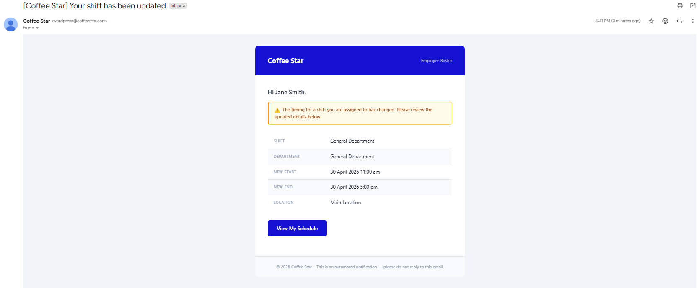
Email contents
- Shift title
- Updated date and time
- Location
📋
Only start/end time changes trigger this email. Editing other shift fields (title, location, notes, break minutes, colour) does not send a notification to assignees.
Leave Decision Email
Starter+
A leave decision email is sent to an employee the moment a manager approves or declines their leave request. The email fires at the point the manager saves the decision with no additional confirmation step needed.
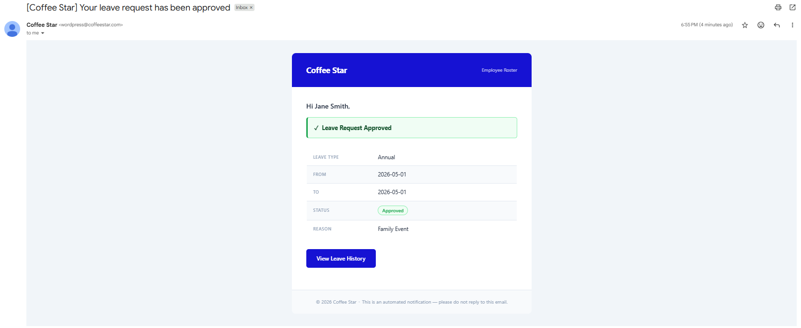
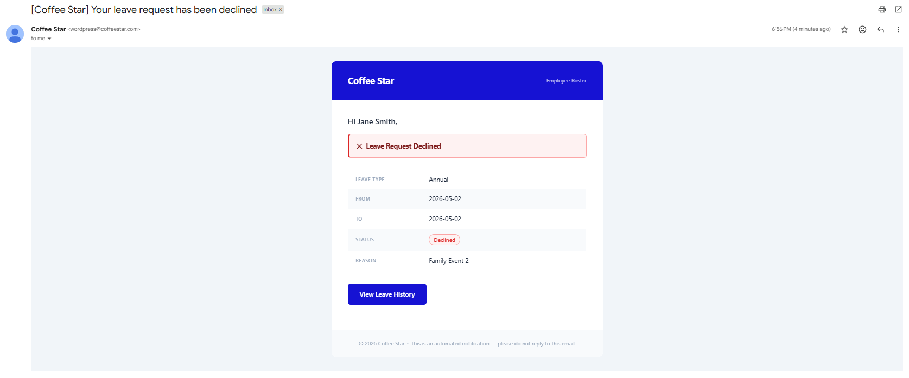
Email contents
- Leave type (Annual Leave or Sick Leave)
- Leave dates (start and end)
- Decision: Approved or Declined
Shortcode Pages
Employee Roster automatically creates five WordPress pages pre-loaded with shortcodes when the plugin is first activated. These pages let employees manage their roster from the public-facing side of the WordPress site, without needing to navigate the WP Admin at all. Unauthenticated visitors who land on any of these pages see a login prompt; the roster content is never publicly exposed through these shortcodes.
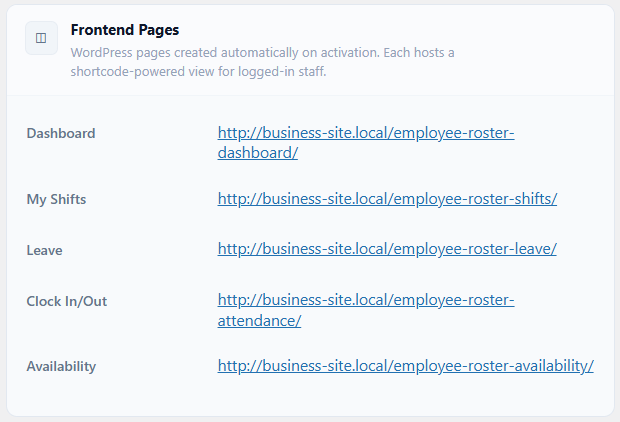
| Page | Default Slug | Shortcode |
|---|
| Dashboard | /emp-roster-dashboard | [emp_roster_dashboard] |
| My Shifts | /emp-roster-shifts | [emp_roster_shifts] |
| Leave | /emp-roster-leave | [emp_roster_leave] Starter+ only. Not part of the free version. Managers also review all leave and swap requests in EmpRoster > Requests in the WP admin. |
| Clock In/Out | /emp-roster-attendance | [emp_roster_attendance] |
| Availability | /emp-roster-availability | [emp_roster_availability] |
The same JavaScript SPA that powers the WP Admin views also powers the frontend shortcode pages; only the rendered content differs based on the data-page attribute of the app container. If any of the auto-created pages are deleted, you can re-create them manually by placing the corresponding shortcode on any WordPress page.
Public Roster Shortcode
Professional+
The public roster shortcode requires the Professional plan or above. Unlike the five frontend portal shortcodes, this shortcode renders a read-only roster view that does not require the visitor to be logged in.
Enabling the public roster
Go to EmpRoster > Settings > Roles & Permissions and toggle Public Roster Shortcode on. Once enabled, place the shortcode on any WordPress page:
[emp_roster_public]
Use cases
- Display the current week's schedule on a public-facing staff page
- Allow customers or walk-in staff to see shift availability without logging in
- Embed the roster on a break-room display or shared tablet
⚠️
In the free version and on the Starter plan, the [emp_roster_public] shortcode renders a login gate instead of the public roster, even if the toggle was previously enabled. The public view only activates when the site is on a Professional or Business plan.
Settings: General
Navigate to EmpRoster > Settings > General to configure site-wide display and organisation options. Department and location limits are enforced per plan; the "Add" button is hidden once the limit is reached and an upgrade prompt appears.
| Setting | Description | Default |
|---|
| Company name | Displayed in email notifications and PDF roster exports | WordPress site name |
| Departments | Newline-separated list. Limit: unlimited in the free version, 5 on Starter, unlimited on Professional and Business. | General Department |
| Locations | Location names with colour pickers. Limit: unlimited in the free version, 5 on Starter, unlimited on Professional and Business. | Main Location (#2563EB) |
| Week start | First day of the week in all calendar views | Monday |
| Primary colour | Brand colour used throughout the plugin UI | #2563EB |
Settings: Roster & Attendance
Navigate to EmpRoster > Settings > Roster & Attendance to configure clock-in/out behaviour. This section controls whether the attendance submenu and frontend clock widget are made available to employees.
| Setting | Description | Default |
|---|
| Allow self clock-in/out | Show the Attendance submenu and allow employees to clock in/out themselves | Enabled |
See Self-Clock Setting for a full description of what changes when this setting is disabled.
Settings: Departments
Departments are managed in EmpRoster > Settings > General. Each department entered here becomes available as a selectable option in the shift creation form, allowing shifts to be organised by team or business function. On the Starter plan, the Add button is hidden once the plan limit is reached and an upgrade prompt appears below the list. The free version and the Professional and Business plans are unlimited.
| Plan | Department limit |
|---|
| Free (WordPress.org) | Unlimited |
| Starter | 5 |
| Professional | Unlimited |
| Business | Unlimited |
📋
Departments are stored as a newline-separated list. Renaming a department in settings does not retroactively update existing shifts — those shifts retain the department name that was in use when they were created.
Settings: Locations
Locations are managed in EmpRoster > Settings > General. Each location has a name and a colour. The name appears in shift forms and the roster view; the colour visually distinguishes shifts assigned to that location in calendar views. On the Starter plan, the Add button is hidden once the plan limit is reached and an upgrade prompt appears below the list. The free version and the Professional and Business plans are unlimited.
| Plan | Location limit |
|---|
| Free (WordPress.org) | Unlimited |
| Starter | 5 |
| Professional | Unlimited |
| Business | Unlimited |
📋
Each location requires a unique name and a hex colour. The default location (Main Location, #2563EB) is seeded on activation. Deleting a location that is still referenced by existing shifts will leave those shifts with the original location name intact — the name is stored on the shift record, not resolved dynamically.
Settings: Leave & Accrual
Navigate to EmpRoster > Settings > Leave to configure leave management and annual entitlements. Leave balance tracking is a Starter+ feature. Leave management is not part of the free version, so these settings do not appear there.
📋
The Leave menu item has been renamed to Requests. The /emp-roster-leave frontend shortcode page and [emp_roster_leave] shortcode are unchanged.
| Setting | Description | Default |
|---|
| Leave Module | Show the Requests menu item and allow leave requests to be submitted | Enabled |
| Leave Balances | Track accrued vs used leave per employee (Starter+ only) | Disabled |
| Annual leave (full-time) | Entitlement in days per year for full-time employees | 20 |
| Annual leave (part-time) | Entitlement in days per year for part-time employees | 10 |
| Sick leave (full-time) | Entitlement in days per year for full-time employees | 10 |
| Sick leave (part-time) | Entitlement in days per year for part-time employees | 5 |
Settings: Employment Type & Overtime
Starter+
Weekly hour thresholds are configured in EmpRoster > Settings and require the Starter plan or above. Each threshold sets the expected maximum scheduled hours per week for that employment type. When a staff member's total scheduled hours in the displayed week approaches or exceeds their threshold, a flag is shown against their row in the roster view. In the free version the flags are hidden entirely.
| Setting | Description | Plan | Default |
|---|
| Full-time weekly hours | Maximum scheduled hours per week before a full-time employee is flagged in the roster | Starter+ | 38 |
| Part-time weekly hours | Maximum scheduled hours per week before a part-time employee is flagged in the roster | Starter+ | 24 |
| Casual weekly hours | No enforced limit applies; casual employees are never flagged regardless of hours scheduled | Starter+ | No limit |
📋
Hour limit flags are advisory only — they do not prevent a manager from scheduling an employee beyond their threshold. Thresholds apply to scheduled hours (shift duration), not to worked hours from clock-in/out records.
Settings: Payroll
Navigate to EmpRoster > Settings > Payroll to configure earnings calculations, penalty rate multipliers, tax, and daily budget. Payroll and penalty rates require Starter+; the Tax and Budgeting sub-sections each require Professional+.
| Setting | Description | Plan | Default |
|---|
| Enable payroll | Activates pay rate fields and gross earnings calculations throughout the plugin. When disabled, all payroll data is hidden. | Starter+ | Enabled |
| Saturday penalty rate | Pay rate multiplier applied to all shifts that fall on a Saturday. Set to 1.0 to disable the penalty for Saturdays. | Starter+ | 1.5 |
| Sunday penalty rate | Pay rate multiplier applied to all shifts that fall on a Sunday. Set to 1.0 to disable the penalty for Sundays. | Starter+ | 2.0 |
| Enable tax | Applies a percentage tax deduction to each employee's gross earnings, producing a net pay figure displayed in the Timesheets view. | Professional+ | Disabled |
| Tax rate (%) | Tax percentage deducted from gross earnings when tax is enabled. Setting this to 0 produces no deduction without needing to toggle the setting off. | Professional+ | 0 |
| Enable daily budget | Shows a daily labour cost row in the roster week and month views, colour-coded against the target: red when over budget, green when within budget. | Professional+ | Disabled |
| Daily budget target ($) | Site-wide target daily labour cost used for budget colour-coding in the roster view. Set to 0 to clear the target. | Professional+ | 0 |
Settings: Roles & Permissions
Navigate to EmpRoster > Settings > Roles & Permissions to control which roles can access specific features and data within the plugin. Settings are organised into three groups — Access & Profile Mode, Supervisor Pay Rate, and Admin Visibility — each corresponding to a distinct card section in the admin dashboard.
Access & Profile Mode
Both toggles in this group require the Starter plan or above. They are not part of the free version.
| Setting | Description | Plan | Default |
|---|
| Profile Mode | Prevents employees and supervisors from logging into WordPress directly. Email notifications continue to function normally. Managers and WP Administrators are never affected by this toggle. | Starter+ | Disabled |
| Manager Settings Access | Controls whether Roster Managers can open and save changes in the plugin settings pages. When disabled, Roster Managers can view the dashboard but cannot modify any plugin configuration. | Starter+ | Enabled |
⚠️
Disabling Manager Settings Access locks all Roster Manager accounts out of plugin settings pages. Only WP Administrators will be able to change plugin configuration. Ensure at least one WP Administrator account remains accessible before applying this restriction.
See Profile Mode: Overview & Use Case for a full description of how Profile Mode works and when to use it.
Supervisor Pay Rate
| Setting | Description | Plan | Default |
|---|
| Supervisors can see pay rates | When enabled, supervisors can view hourly pay rate fields and earnings columns in the staff list and shift assignment modal. When disabled, those fields are hidden from all supervisor accounts regardless of other settings. | Professional+ | Disabled |
Admin Visibility
These settings control whether WordPress Administrator accounts appear in roster staff lists alongside regular employees. This section is visible only to WP Administrators — Roster Manager accounts do not see it on the settings page and cannot modify these options.
| Setting | Description | Plan | Default |
|---|
| Include Current Administrator | Adds the currently logged-in WP Administrator to roster staff lists so they appear alongside employees in shift views. | All plans | Disabled |
| Include All Administrators | Adds every WP Administrator account to roster staff lists, regardless of which admin is currently logged in. | All plans | Disabled |
Settings: Integrations & Public View
Professional+
The Public View setting is located in EmpRoster > Settings > Roles & Permissions. It enables a read-only shortcode that exposes the current roster to visitors who are not logged in. This feature requires the Professional plan or above; sites on the Starter plan see an upgrade prompt in place of this toggle, and it is not part of the free version.
| Setting | Description | Plan | Default |
|---|
| Public roster shortcode | Enables the [emp_roster_public] shortcode. When active, the shortcode renders a read-only view of the current week's roster on any page — no login required. When disabled, the shortcode outputs a login gate instead of roster content. | Professional+ | Disabled |
📋
The public roster view displays the same week and month views available to logged-in users but with all editing and management actions removed. Employee names and shift details are visible to anyone who can reach the page — consider placing it behind a password-protected page if unrestricted public exposure is not intended.
See Public Roster Shortcode in the Frontend Portal section for full usage details.
Settings: Email Notifications
Navigate to EmpRoster > Settings > Email Notifications to enable or disable all automated plugin emails. Email notifications are available on every version, including the free version on WordPress.org. The free version sends a simplified welcome email; Starter and above send the full onboarding email with login credentials and setup links.
| Setting | Description | Default |
|---|
| Enable email notifications | Send automated emails for new accounts, shift assignments, timing changes, and leave decisions | Disabled |
Enabling this single toggle activates all four notification types simultaneously: Welcome Email, Shift Assignment Email, Shift Timing Change Email, and Leave Decision Email. Individual notification types cannot be enabled or disabled separately.
Settings: Job Sheet Attachments
Professional+
Navigate to EmpRoster > Settings > Attachments to configure job sheet file attachments. This feature requires the Professional plan or above; the Attachments settings card shows an upgrade prompt on the Starter plan and is not part of the free version.
Enabling attachments
Toggle Enable job sheet attachments on to allow managers to upload files directly to individual shifts. Once enabled, an Attachments section appears inside the shift edit form where files can be uploaded and removed.
Supported file types and size limit
| Allowed types | Maximum file size |
|---|
| PDF, PNG, JPG / JPEG | 2 MB per file |
Uploads that exceed 2 MB or use an unsupported file type are rejected at the point of upload with an inline error. No partial upload is stored.
How attachments appear in shifts
Once a file is attached to a shift, it appears as a named link in the shift detail panel for both managers and assigned employees. Multiple files can be attached to a single shift. Managers can delete individual attachments from the shift edit form at any time.
Employee access
Employees assigned to a shift can view and download its attachments from:
- The shift detail panel in EmpRoster > Shifts in the WP Admin
- The frontend shift detail view (if the frontend portal shortcode is active)
Employees can only download attachments; they cannot upload or delete files. Unassigned employees and employees on other shifts do not have access to attachments they are not linked to.
Auto-delete policy
Set Auto-delete attachments after to automatically remove uploaded files after a shift's date has passed by the configured period. This keeps storage usage in check and removes files that are no longer operationally relevant.
| Option | Effect |
|---|
| Never | Files are retained indefinitely until manually deleted by a manager |
| 1 month | Files are deleted approximately 30 days after the shift date |
| 3 months | Files are deleted approximately 90 days after the shift date |
What happens when files are automatically removed
When the auto-delete threshold is reached for a shift's attachments:
- The physical files are permanently deleted from the server — they cannot be recovered
- The attachment links are removed from the shift detail panel for both managers and employees
- No notification is sent to managers or employees when auto-deletion occurs
- The shift itself and all other shift data (hours, notes, assignments) are unaffected
⚠️
Auto-deletion is permanent. If you need to retain job sheet files for compliance or record-keeping, download and archive them externally before the configured retention period expires, or set the policy to Never.
Settings: Frontend Pages
Employee Roster automatically creates five WordPress pages with embedded shortcodes when the plugin is first activated. These pages give employees access to their roster, leave, attendance, and availability without needing to navigate the WordPress admin. Each page can be renamed, moved, or embedded in a custom template — the shortcode remains functional regardless of the page's title or URL.
| Page | Default slug | Shortcode |
|---|
| Dashboard | /emp-roster-dashboard | [emp_roster_dashboard] |
| My Shifts | /emp-roster-shifts | [emp_roster_shifts] |
| Leave | /emp-roster-leave | [emp_roster_leave] |
| Clock In / Out | /emp-roster-attendance | [emp_roster_attendance] |
| Availability | /emp-roster-availability | [emp_roster_availability] |
Unauthenticated visitors see a login prompt on all frontend pages. The same application that powers the WordPress admin views also powers the frontend — only the rendered layout changes based on context. See Shortcode Pages in the Frontend Portal section for a full description of each page's functionality.
Profile Mode: Overview & Use Case
Starter+
Profile Mode is an access control feature that prevents employees and supervisors from logging into WordPress while still allowing them to receive email notifications. It requires the Starter plan or above.
Use case
Businesses that manage schedules internally and only want employees to receive email updates, without granting them any WordPress access, can enable Profile Mode. This is common where the WP Admin should be restricted to managers and the IT team only. Managers and WP Administrators are never affected by Profile Mode.
Behaviour when enabled
- Any login attempt by a user with the
emr_employee or emr_supervisor role is rejected with the message: "Employee login is currently disabled. You will continue to receive schedule updates by email."
- WP Administrators and Roster Managers can always log in regardless of this setting.
- All existing active WordPress sessions for employees and supervisors are immediately terminated the moment Profile Mode is switched on; affected users cannot continue browsing even if they were already logged in.
- Email notifications continue to fire normally; they are triggered server-side by manager actions and do not require employees to be logged in.
⚠️
Session termination is immediate. Any employee or supervisor who is actively using the WordPress admin when Profile Mode is enabled will be logged out instantly. Communicate this change to affected staff before enabling it.
An amber warning banner is displayed on the Settings page while Profile Mode is active as a persistent visual reminder for admins and managers.
Plan downgrade behaviour
If a site with Profile Mode enabled downgrades from Starter to Free, Profile Mode is automatically disabled. Employees and supervisors regain the ability to log into WordPress immediately. No data is lost; the setting can be re-enabled if the site upgrades back to Starter or above.
Enabling Profile Mode
Starter+
Profile Mode requires the Starter plan or above. Follow these steps to enable it:
- Go to EmpRoster > Settings > Roles & Permissions.
- Toggle Enable Profile Mode on.
- Click Save Settings.
⚠️
Saving triggers immediate session termination. All active WordPress sessions for users with the emr_employee or emr_supervisor role are ended the moment settings are saved. Inform affected staff before making this change.
Disabling Profile Mode
Toggle Enable Profile Mode off and save. Employees and supervisors can log into WordPress normally again immediately. The amber warning banner on the Settings page disappears once the setting is saved in the off state.
Employee Login Logs
Professional+
Employee Login Logs tracks authentication events for all roster user accounts. It requires the Professional plan or above. Once enabled, managers can access a filterable audit log showing successful logins, logouts, and failed login attempts for every emr_employee, emr_supervisor, and emr_manager account.
Enabling login logs
Go to EmpRoster > Settings > Access Control and toggle Enable employee login logs on. Logging begins immediately on save; no historical events prior to enabling are recorded.
Log columns
| Column | Description |
|---|
| Timestamp | Date and time the event occurred, using the WordPress site timezone |
| Event type | Login, Logout, or Failed login attempt |
| Employee | The roster staff member the event relates to |
| IP address | The IP address from which the request originated |
| Device / browser | The detected user agent string |
Screenshot placeholder — Employee Login Logs table in EmpRoster admin
Filtering the log
Managers can filter the log by event type (login, logout, or failed), date range, and individual employee. Filters are applied in combination; narrowing by employee and date range together is supported.
Retention policy
A configurable auto-delete retention policy keeps the log size manageable. Set the retention period in EmpRoster > Settings > Access Control:
- 30 days
- 60 days
- 90 days
- 180 days
- 365 days
- Never — retain all records indefinitely
Records older than the configured period are automatically purged on a daily schedule. Changing the retention period to a shorter window immediately deletes any records that now fall outside the new limit.
Plan availability
| Plan | Employee Login Logs |
|---|
| Free | ✗ |
| Starter | ✗ |
| Professional | ✓ |
| Business | ✓ |
📋
WordPress Administrator login events are not tracked by this feature. The log covers only accounts with the emr_employee, emr_supervisor, or emr_manager role.
Feature Availability by Plan
Employee Roster is sold in three tiers: Starter ($99/year), Professional ($199/year), and Business ($599/year for 5 sites). Licences are annual and per-site unless noted. Every paid plan includes a 14-day free trial with no credit card required.
A separate free version is available on WordPress.org. It is a complete rostering tool rather than a trial: unlimited employees, departments, locations, and shifts, with day, weekly, and monthly roster views and email notifications. Staff are managed directly from your WordPress Administrator account. The "Free" column below describes that version.
On the paid plans, features above your tier display an upgrade prompt rather than a broken or missing control.
| Feature | Free | Starter | Professional | Business |
|---|
| Active shifts | Unlimited | Unlimited | Unlimited | Unlimited |
| Locations | Unlimited | Up to 5 | Unlimited | Unlimited |
| Departments | Unlimited | Up to 5 | Unlimited | Unlimited |
| Employees | Unlimited | Unlimited | Unlimited | Unlimited |
| WordPress sites | 1 | 1 | 1 | 5 |
| Day roster view | ✓ | ✓ | ✓ | ✓ |
| Weekly roster view | ✓ | ✓ | ✓ | ✓ |
| Monthly calendar view | ✓ | ✓ | ✓ | ✓ |
| Open shifts (post & self-assign) | ✗ | ✓ | ✓ | ✓ |
| Copy roster | ✗ | ✓ | ✓ | ✓ |
| Attendance & clock in/out | ✗Starter+ only | ✓ | ✓ | ✓ |
| Leave requests (submit) | ✗ | ✓ | ✓ | ✓ |
| Leave approval workflow | ✗ | ✓ | ✓ | ✓ |
| Leave balance tracking & accrual | ✗ | ✓ | ✓ | ✓ |
| Staff availability management | ✓ | ✓ | ✓ | ✓ |
| Availability hints in shift modal | ✗ | ✓ | ✓ | ✓ |
| Shift swap requests | ✗ | ✗ | ✓ | ✓ |
| Manager Settings access | ✗ | ✓ | ✓ | ✓ |
| Profile Mode (optional employee login restriction) | Employee logins are never restricted in the free version | ✓ | ✓ | ✓ |
| Payroll (pay rates, earnings) | ✗ | ✓ | ✓ | ✓ |
| Weekend penalty rates | ✗ | ✓ | ✓ | ✓ |
| Analytics dashboard | ✗ | ✓ | ✓ | ✓ |
| Tax calculations | ✗ | ✗ | ✓ | ✓ |
| Daily budget tracking | ✗ | ✗ | ✓ | ✓ |
| Weekly hour limits per job type | ✗ | ✓ | ✓ | ✓ |
| CSV export (timesheets) | ✗ | ✓ | ✓ | ✓ |
| Skill Tags | ✗ | ✗ | ✓ | ✓ |
| Employee Login Logs | ✗ | ✗ | ✓ | ✓ |
| PDF export (Print PDF roster) | ✗ | ✗ | ✓ | ✓ |
| Email notifications | ✓Simplified welcome | ✓ | ✓ | ✓ |
| Job Sheet Attachments | ✗ | ✗ | ✓ | ✓ |
| Public roster shortcode | ✗ | ✗ | ✓ | ✓ |
| Supervisors can see pay rates | ✗ | ✗ | ✓ | ✓ |
| Support | Community forum | Email (72 hr) | Email (24 hr) | Priority (same day) |
| Updates | Security only | 1 year | 1 year | 1 year |
| 14-day free trial | Not applicable — the free version is permanent, not a trial | ✓No card required | ✓No card required | ✓No card required |
Staff Account Limits by Plan
Employee accounts are unlimited on every version. On the paid plans, the number of supervisor accounts you can create is determined by your plan; these limits are enforced at the backend the moment a new account is created, and the request is rejected with an HTTP 403 error if the plan limit would be exceeded. The free version on WordPress.org has no account limits of any kind.
| Role | Free | Starter | Professional | Business |
|---|
Roster Employee (emr_employee) | Unlimited | Unlimited | Unlimited | Unlimited |
Roster Supervisor (emr_supervisor) | Not part of the free version — manage your team directly through your WordPress Administrator account | Up to 2 | Unlimited | Unlimited |
Roster Manager (emr_manager) | Not part of the free version — manage your team directly through your WordPress Administrator account | Unlimited * | Unlimited | Unlimited |
* On the Starter plan, WordPress administrator accounts can be included in the roster as Managers via the Admin Visibility settings (Settings > Roles & Permissions). There is no cap on how many administrator accounts can be included this way. The emr_manager role account limit has been removed from the Starter plan — creating dedicated Roster Manager accounts via Add Staff is also unrestricted.
📋
Existing staff are grandfathered. If a site downgrades to a lower plan, existing staff accounts above the new limit are not deleted and continue working normally. The cap only blocks the creation of new accounts beyond the limit.
📋
Upgrading restores all configuration immediately. If settings such as extra departments, locations, or plan-gated features were previously configured and then limited by a plan downgrade, they take effect again automatically the moment the site upgrades back with no manual re-enabling needed.